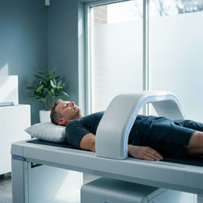

Realistic test icons — the Biograph approach
I studied Biograph's real icons: they're tight, vivid photos of the actual test — a body scan, a person applying a glucose sensor, a real blood macro. Specific, not generic orbs. Here are 6 of yours redone that way (new on the left, current orb on the right). Below is the plan for all 22.
Full-Body MRI


DEXA Scan


VO₂ Max

Mobility Assessment

Strength Testing

Brain Health

Plan for all 22
Most go realistic. A few biological ones become tight vivid macros. The 3 pure-concept ones stay as colorful abstract icons (there's no real-world thing to photograph).
| MRI, DEXA, VO₂ Max, Mobility, Strength, Brain Health, Lifestyle/Sleep, Metabolic (glucose sensor) | Realistic real test, equipment, or person doing it |
| Advanced Cardiovascular, Serum Hormones, Salivary/Urinary Hormones, Cancer Screening, Food Reactivity, Nutritional Analysis | Realistic blood draw / sample / food macro |
| Inflammation, Micronutrients, Genetic Testing, Organ Function, Gut Microbiome | Vivid macro tight real close-up (cells, DNA, vitamins, microbiome) |
| Biological Age, Resilience Profile, Toxic Exposure | Keep abstract no real subject to photograph |